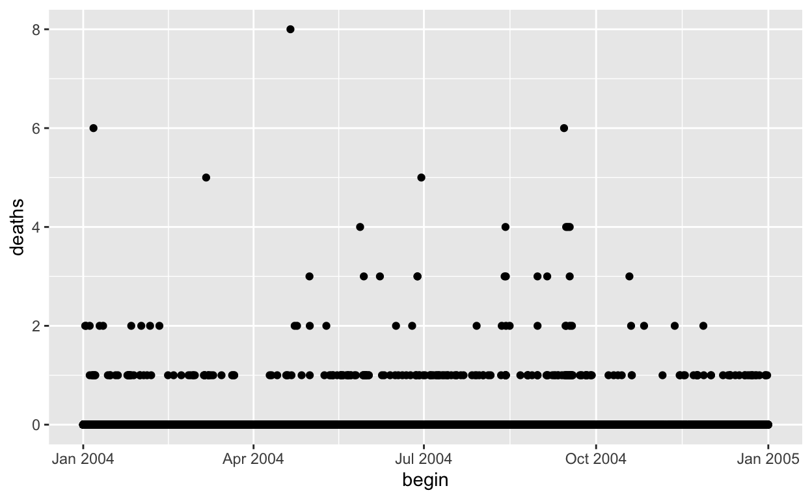

Pre-lecture materials
Read ahead
Before class, you can prepare by reading the following materials:
Acknowledgements
Material for this lecture was borrowed and adopted from
Learning objectives
At the end of this lesson you will:
Introduction
R has developed a special representation of dates and times
Dates are represented by the
DateclassTimes are represented by the
POSIXctor thePOSIXltclassDates are stored internally as the number of days since 1970-01-01
Times are stored internally as the number of seconds since 1970-01-01
The lubridate package
The
lubridatepackage is a very useful package for dealing with all the little annoying aspects of dates/timesLargely replaces the default date/time functions in base R
Methods for date/time arithmetic
Handles time zones, leap year, leap seconds, etc.
library("lubridate")
## Part of `tidyverse` package
Dates in R
Dates are represented by the Date class and can be coerced from a character string using the ymd() function.
Date objects have their own special print methods that will always format as “YYYY-MM-DD”.
Alternate Formulations
Different locales have different ways formatting dates
ymd("2016-09-13") ## International standard
[1] "2016-09-13"ymd("2016/09/13") ## Just figure it out
[1] "2016-09-13"mdy("09-13-2016") ## Mostly U.S.
[1] "2016-09-13"dmy("13-09-2016") ## Europe
[1] "2016-09-13"All of the above are valid and lead to the exact same object.
Even if the individual dates are formatted differently, ymd() can usually figure it out.
Times in R
Times are represented using the POSIXct or the POSIXlt class
POSIXctis just a very large integer under the hood; it is a useful class when you want to store times in something like a data framePOSIXltis a list underneath and it stores a bunch of other useful information like the day of the week, day of the year, month, day of the month
Times are represented as the number of seconds since 1970-01-01 00:00:00.
If you want to know more about the international date/time standard, you can read about ISO Standard 8601.
Inputing Time Data
Times can be coerced from a character string with ymd_hms()
ymd_hms("2016-09-13 14:00:00")
[1] "2016-09-13 14:00:00 UTC"ymd_hms("2016-09-13 14:00:00", tz = "America/New_York")
[1] "2016-09-13 14:00:00 EDT"ymd_hms("2016-09-13 14:00:00", tz = "")
[1] "2016-09-13 14:00:00 EDT"Time Zones!
Time zones were created to make your data analyses more difficult.
ymd_hms()function will by default use UTC as the time zoneSpecifying
tz = ""will use the local time zoneBetter to specify time zone when possible to avoid ambiguity
You can go to Wikipedia to find the list of time zones
Daylight savings time
Some states are in two time zones
Southern hemisphere is opposite
Specifying Times in R
Finally, there is the strptime() function in case your dates are written in a different format
datestring <- c("January 10, 2012 10:40",
"December 9, 2011 9:10")
x <- strptime(datestring, "%B %d, %Y %H:%M",
tz = "America/Los_Angeles")
x
[1] "2012-01-10 10:40:00 PST" "2011-12-09 09:10:00 PST"Check
?strptimefor details of formatting stringsWhen reading in data with
read_csv(), you may need to read in as character first and then convert to date/time
Operations on Dates and Times
Arithmetic
You can add and subtract dates and times. You can do comparisons too (i.e. ==, <=)
Time difference of 356.5178 daysx + y ## Nope!
Error in `+.POSIXt`(x, y): binary '+' is not defined for "POSIXt" objectsy + 1
[1] "2011-01-09 11:34:22 EST"y <- date(y)
y
[1] "2011-01-09"y + 1
[1] "2011-01-10"Leaps and Bounds
Even keeps track of leap years, leap seconds, daylight savings, and time zones.
Leap years Beware of time zones!Time difference of 1 hoursThere are also leap seconds.
.leap.seconds
[1] "1972-07-01 GMT" "1973-01-01 GMT" "1974-01-01 GMT"
[4] "1975-01-01 GMT" "1976-01-01 GMT" "1977-01-01 GMT"
[7] "1978-01-01 GMT" "1979-01-01 GMT" "1980-01-01 GMT"
[10] "1981-07-01 GMT" "1982-07-01 GMT" "1983-07-01 GMT"
[13] "1985-07-01 GMT" "1988-01-01 GMT" "1990-01-01 GMT"
[16] "1991-01-01 GMT" "1992-07-01 GMT" "1993-07-01 GMT"
[19] "1994-07-01 GMT" "1996-01-01 GMT" "1997-07-01 GMT"
[22] "1999-01-01 GMT" "2006-01-01 GMT" "2009-01-01 GMT"
[25] "2012-07-01 GMT" "2015-07-01 GMT" "2017-01-01 GMT"Extracting Elements of Dates/Times
There are a set of helper functions in lubridate that can extract sub-elements of dates/times
Date Elements
Time Elements
Visualizing Dates
Reading in the Data
library(here)
library(readr)
storm <- read_csv(here("data", "storms_2004.csv.gz"), progress = FALSE)
names(storm)
[1] "BEGIN_YEARMONTH" "BEGIN_DAY" "BEGIN_TIME"
[4] "END_YEARMONTH" "END_DAY" "END_TIME"
[7] "EPISODE_ID" "EVENT_ID" "STATE"
[10] "STATE_FIPS" "YEAR" "MONTH_NAME"
[13] "EVENT_TYPE" "CZ_TYPE" "CZ_FIPS"
[16] "CZ_NAME" "WFO" "BEGIN_DATE_TIME"
[19] "CZ_TIMEZONE" "END_DATE_TIME" "INJURIES_DIRECT"
[22] "INJURIES_INDIRECT" "DEATHS_DIRECT" "DEATHS_INDIRECT"
[25] "DAMAGE_PROPERTY" "DAMAGE_CROPS" "SOURCE"
[28] "MAGNITUDE" "MAGNITUDE_TYPE" "FLOOD_CAUSE"
[31] "CATEGORY" "TOR_F_SCALE" "TOR_LENGTH"
[34] "TOR_WIDTH" "TOR_OTHER_WFO" "TOR_OTHER_CZ_STATE"
[37] "TOR_OTHER_CZ_FIPS" "TOR_OTHER_CZ_NAME" "BEGIN_RANGE"
[40] "BEGIN_AZIMUTH" "BEGIN_LOCATION" "END_RANGE"
[43] "END_AZIMUTH" "END_LOCATION" "BEGIN_LAT"
[46] "BEGIN_LON" "END_LAT" "END_LON"
[49] "EPISODE_NARRATIVE" "EVENT_NARRATIVE" "DATA_SOURCE" Let’s take a look at the BEGIN_DATE_TIME and DEATHS_DIRECT variables
# A tibble: 52,409 × 3
BEGIN_DATE_TIME EVENT_TYPE DEATHS_DIRECT
<chr> <chr> <dbl>
1 29-DEC-04 18:00:00 Heavy Snow 0
2 29-DEC-04 18:00:00 Heavy Snow 0
3 08-DEC-04 18:00:00 Winter Storm 0
4 19-DEC-04 15:00:00 High Wind 0
5 14-DEC-04 06:00:00 Winter Weather 0
6 21-DEC-04 04:00:00 Winter Storm 0
7 21-DEC-04 04:00:00 Winter Storm 0
8 26-DEC-04 15:00:00 Winter Storm 0
9 26-DEC-04 15:00:00 Winter Storm 0
10 11-DEC-04 08:00:00 Storm Surge/Tide 0
# … with 52,399 more rowsWe can first convert the date/time to a date/time R object.
storm_sub <- select(storm, BEGIN_DATE_TIME, EVENT_TYPE, DEATHS_DIRECT) %>%
mutate(begin = dmy_hms(BEGIN_DATE_TIME)) %>%
rename(type = EVENT_TYPE,
deaths = DEATHS_DIRECT) %>%
select(begin, type, deaths)
storm_sub
# A tibble: 52,409 × 3
begin type deaths
<dttm> <chr> <dbl>
1 2004-12-29 18:00:00 Heavy Snow 0
2 2004-12-29 18:00:00 Heavy Snow 0
3 2004-12-08 18:00:00 Winter Storm 0
4 2004-12-19 15:00:00 High Wind 0
5 2004-12-14 06:00:00 Winter Weather 0
6 2004-12-21 04:00:00 Winter Storm 0
7 2004-12-21 04:00:00 Winter Storm 0
8 2004-12-26 15:00:00 Winter Storm 0
9 2004-12-26 15:00:00 Winter Storm 0
10 2004-12-11 08:00:00 Storm Surge/Tide 0
# … with 52,399 more rowsHistograms of Dates/Times
We can make a histogram of the dates/times to get a sense of when storm events occur.

We can group by event type too.
library(ggplot2)
storm_sub %>%
ggplot(aes(x = begin)) +
facet_wrap(~ type) +
geom_histogram(bins = 20) +
theme_bw() +
theme(axis.text.x.bottom = element_text(angle = 90))

Scatterplots of Dates/Times
storm_sub %>%
ggplot(aes(begin, deaths)) +
geom_point()

If we focus on a single month, the x-axis adapts.
storm_sub %>%
filter(month(begin) == 6) %>%
ggplot(aes(begin, deaths)) +
geom_point()

Similarly, we can focus on a single day.
storm_sub %>%
filter(month(begin) == 6, day(begin) == 16) %>%
ggplot(aes(begin, deaths)) +
geom_point()

Summary
Dates and times have special classes in R that allow for numerical and statistical calculations
Dates use the
DateclassTimes use the
POSIXctandPOSIXltclassCharacter strings can be coerced to Date/Time classes using the
ymd()andymd_hms()functions. In strange cases, you can use thestrptime()or theas.Date()functions.The
lubridatepackage is essential for manipulating date/time dataBoth
plotandggplot“know” about dates and times and will handle axis labels appropriately
Post-lecture materials
Final Questions
Here are some post-lecture questions to help you think about the material discussed.
Questions:
Additional Resources